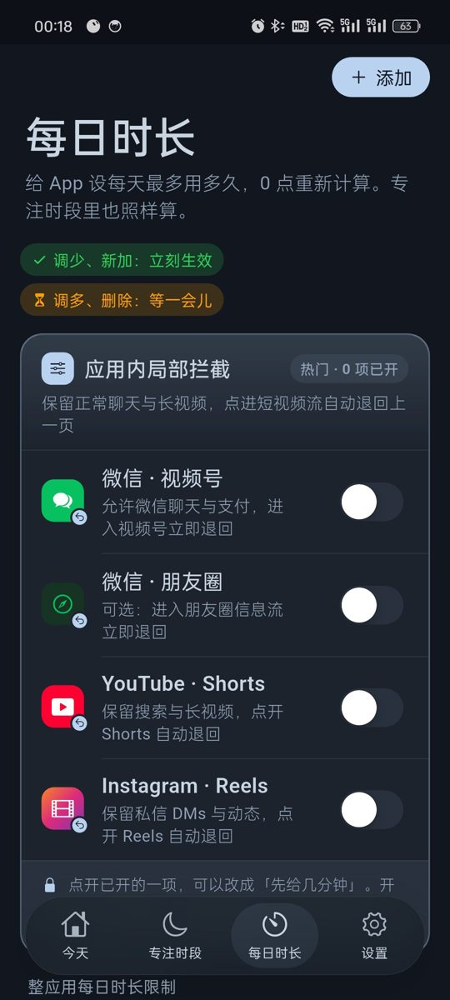

A Few Minutes of WeChat Channels, Then Write a Reason for 5 More
WeChat is the app you cannot remove. Messages, work groups and payments all live there, and Channels sits right in the Discover tab, one tap away from half an hour of videos. Until now Ripple could only back out of Channels and Moments the moment you entered. Some people found that too strict, could not even watch one video a friend sent, and ended up turning the block off. Android v0.1.9 adds a middle option. Channels or Moments can give you a few minutes first, 10 by default, and block after that. If you really want more, you write a reason and get 5 more minutes, up to 3 times a day. Kids run into the same thing, since class groups and family contact are on WeChat while Channels is where the hours go. The first part below is for adults, the second part is for parents, and both Android and iPhone are covered.
Real screens (Android v0.1.9, Chinese interface)


Adults: keep WeChat, lose the half hour in Channels
10 minutes first, then the block
In Daily Limits, turn on WeChat · Channels in the in-app block card at the top, then tap it and choose a time allowance. The default is 10 minutes. After that, entering Channels takes you back a screen. Moments works the same way.
Want more? Write a reason
When the minutes run out you can write a reason to get 5 more minutes, up to 3 times a day. Having to type something out is often enough to make you drop it.
It counts toward WeChat's daily limit
If WeChat has a daily limit, time in Channels and Moments counts toward it. Chatting and watching share the same budget.
Pick any number of minutes
Every time setting in v0.1.9 has a Custom option with a wheel in 1 minute steps. Daily limits go from 1 minute to 12 hours.
If typing a reason is too easy, use strict mode
With strict mode on, extra minutes need the unlock code, and a written reason is not accepted. The code is at least 8 digits. Give it to your partner or a friend. Strict mode also turns on Anti-Uninstall, and if the code is lost you can request removal and wait 72 hours.
iPhone: schedules
The iPhone version is v0.1.5 and cannot limit Channels inside WeChat yet. Put short video apps into schedules such as work hours and bedtime, and on iOS 16 and later the system blocks them in the background. The unlock code works there too. The Channels allowance, daily limits and strict mode are Android only for now.
Parents: kids need WeChat for contact but keep watching Channels
Limit Channels, keep chat and calls
On a child's Android phone, turn on the WeChat · Channels and WeChat · Moments blocks. Class groups, voice calls and payments keep working. Full steps are on the WeChat Channels page.
Allow a little with a time allowance
Some parents find a full block too strict and see kids look for ways around it. Give Channels 10 minutes, or 5 or 15 with Custom, and it closes on its own after that.
Make extra minutes need your code
If writing a reason is too easy for your child, turn on strict mode. Then 5 more minutes needs the unlock code, which you keep.
Cap WeChat as a whole
Give WeChat a daily limit, such as 1 hour. Channels and Moments time counts toward it, and WeChat closes when it is used up. Calls, SMS and alarms always work.
Changing the clock or uninstalling does not help
Android timing uses device uptime, so moving the clock forward ends nothing early. See the clock change page. With Anti-Uninstall on, removing Ripple needs the cooldown or your code.
iPhone: block by homework and bedtime
On a child's iPhone you cannot limit only Channels yet. Block short video apps and games during homework and bedtime, and add WeChat to the bedtime schedule if you want. With the block on deleting apps turned on, long press removal does not work. See the iPhone page.
Setup steps (Android v0.1.16)
Install or update to v0.1.16
Install the latest APK and turn on the accessibility service. With an older version, update from Settings › About › Check for updates and your rules stay.
Turn on the Channels or Moments block
Open Daily Limits and turn on WeChat · Channels or WeChat · Moments in the in-app block card at the top.
Tap it and choose a time allowance
10 minutes by default, or pick another number with Custom. After it runs out, a written reason gives 5 more minutes, up to 3 times a day.
Give WeChat a daily limit if you want
Set how long WeChat can be used per day in the list below. Channels and Moments time counts toward it.
Set the unlock code, strict mode and Anti-Uninstall
On your own phone give the code to family or a friend. On a child's phone keep it yourself. With strict mode on, extra minutes need the code.
FAQ
Can WeChat Channels be limited to a few minutes at a time?
On Android v0.1.16, yes. Turn on WeChat Channels in Ripple's in-app block card, tap it and choose a time allowance. The default is 10 minutes, then it backs out. Moments works the same way.
What if I want more after the time is up?
Write a reason for 5 more minutes, up to 3 times a day. With strict mode on, you need the unlock code instead.
Does Channels time count toward WeChat's daily limit?
Yes. If WeChat has a daily limit, Channels and Moments time is part of it.
Do chat and payments still work?
Yes. Ripple only acts on the Channels and Moments screens. Chat, voice calls and the payment code work as usual.
Can my child keep writing reasons forever?
No more than 3 times a day. To stop it completely, turn on strict mode so extra minutes need the code you keep.
Can iPhone limit only Channels?
Not yet. iPhone v0.1.5 has schedules, the block on deleting apps, clock change protection and the unlock code. The Channels allowance, daily limits and strict mode are Android only.
Does it cost money or need an account?
It is free with no ads and no account. Settings stay on the phone.